DERT - Doctor's Emergency Rescue Task App
Emergency Notification App for Closed Community of
Doctors in Dehradun
Find Project on: Google PlayStore
Abstract
‘Violence Against Doctors’ is a serious consequential issue prevailing in major parts of India. If the medical condition of a patient depletes, sometimes the patient’s acquaintance become angry and give threatening warnings to the assigned doctor. And, in worse case the situation escalates to point where they even violently attack the doctor. Due to these events, the doctors are afraid of taking severe emergency cases. Here's the link of few articles from newspapers regarding the same issue:
During these emergency situations, a doctor needs to notify everyone in the community about his/her situation to call for help. DERT application helps them to notify that they are in an emergency. With a single tap, a doctor can share his/her name, hospital’s name, location and phone number to everyone in the community in the form of push notification and SMS.
Videographic Demonstration
Existing Technology
Doctor's community in Dehradun used whatsapp group to notify others in the community. Manually typing location details, hospital name and other details takes up a lot of time, which is a very crucial factor in emergency situations. With each user having multiple groups on whatsapp, the chances of emergency message being ignored or lost increases substantially.
Existing SOS apps are incapable of catering a large community, and possess limited application due to internet connection requirements.
Design Process
Lo-Fi Prototyping
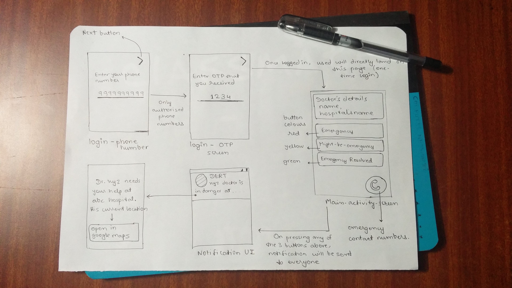
Mid-Fi Prototyping
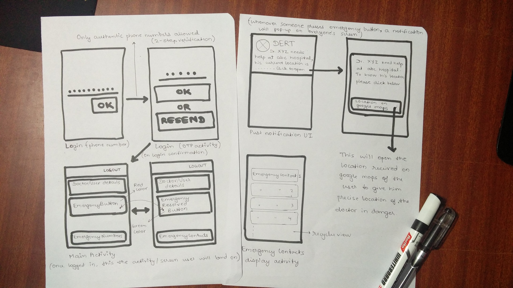
Hi-Fi Prototyping
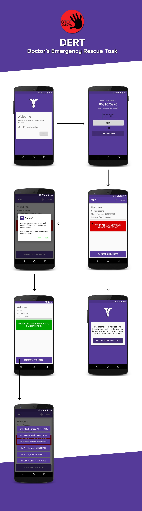
Project Architecture
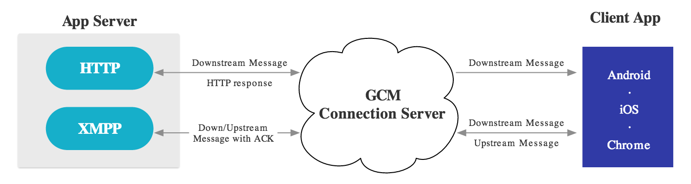
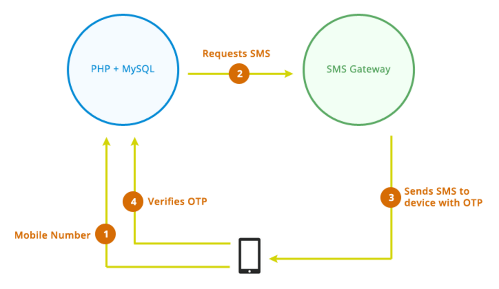
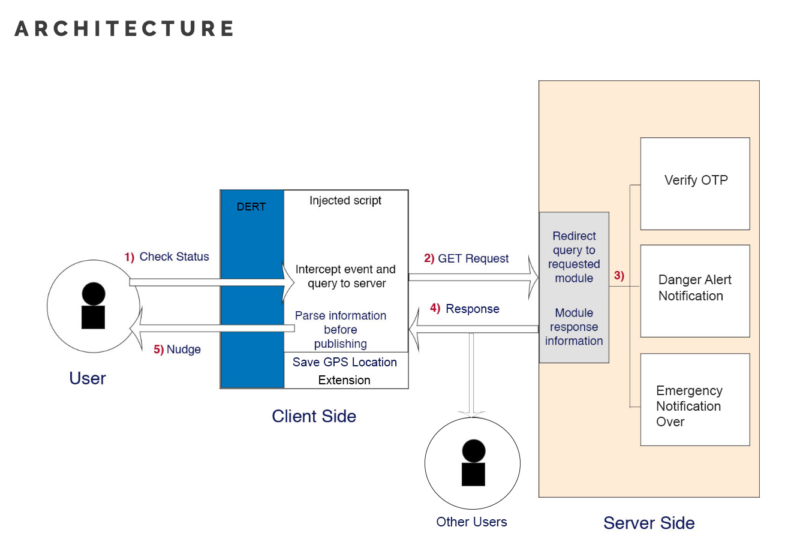
Hi-Fi Prototyping
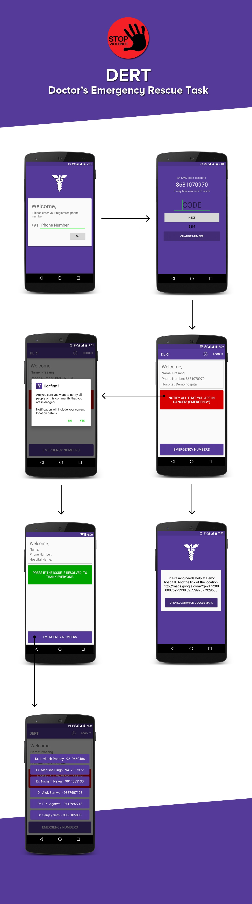
Project Architecture
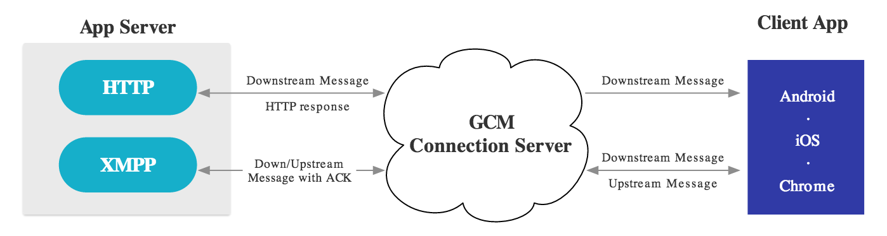
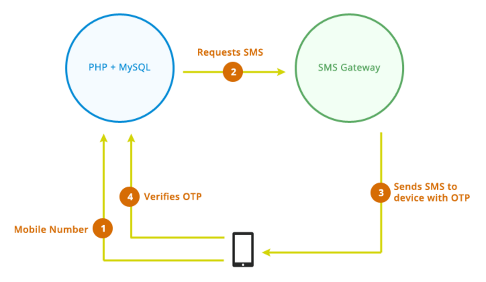
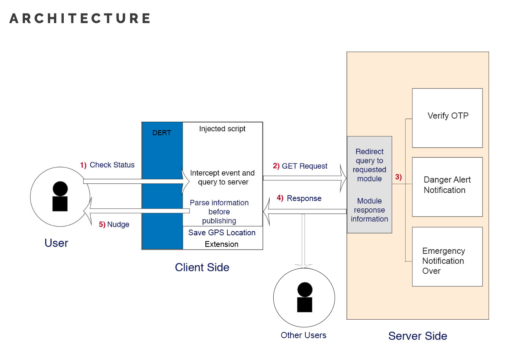
Solution
We found the solution with the aid of mobile technology by providing a cross-platform app (iOS and Android) supported by AWS web servers and MSG91’s OTP services.
We already arranged a list of affiliated doctors and their phone numbers. So, we allowed only affiliated phone numbers to login by checking the number from our server and then ensuring the user with an OTP check system, this allowed us to block unwanted users/intruders making it a dedicated SOS app for a closed community.
When user is in critical situation and needs help, he/she can click on ‘EMERGENCY’ button to send his/her name, location, hospital’s name and phone number to everyone in the community via push notification as well as SMS. So, with JUST 1 TAP, he/she can reach out for help to hundreds of people in the community.
My Work
I was the Co-Founder and Android App Developer of DERT Project. As a developer, the biggest challenge was to fabricate the UI-UX of the app. Shifting the IMA's idea of having 3 buttons for each situation, to a simple single dynamic-button-interface and still keeping it comprehensible to non-techie userbase was a major design challenge. I created the Android platform of DERT followed by testing and designing the Play Store Listings. DERT's Android app architecture include API calls, GCM - Push Notifications, Runtime-Permissions (6.0+), SharedPreferences and Multithreading. With extensive A/B tesings, beta testing and Play Store Optimisations (PSO) we launched our app, and were able to fetch eminent impact.
Impact
With our user-base crossing 160 doctors and still increasing, the impact is loud and clear, providing a validation to our solution. We got appreciated by IMA and many other doctors in the city.
- Rate of violence against doctor is decreased in Dehradun
- Accepted by Indian Medical Association
- We started with 123 doctors
- Around 45 more doctors have joined
- In development for other cities and communities
DERT project got popularised, and recenlty got covered in the newspaper also:
1. Choutha Sansaar (Indore, MP). Date: 18th January 2017
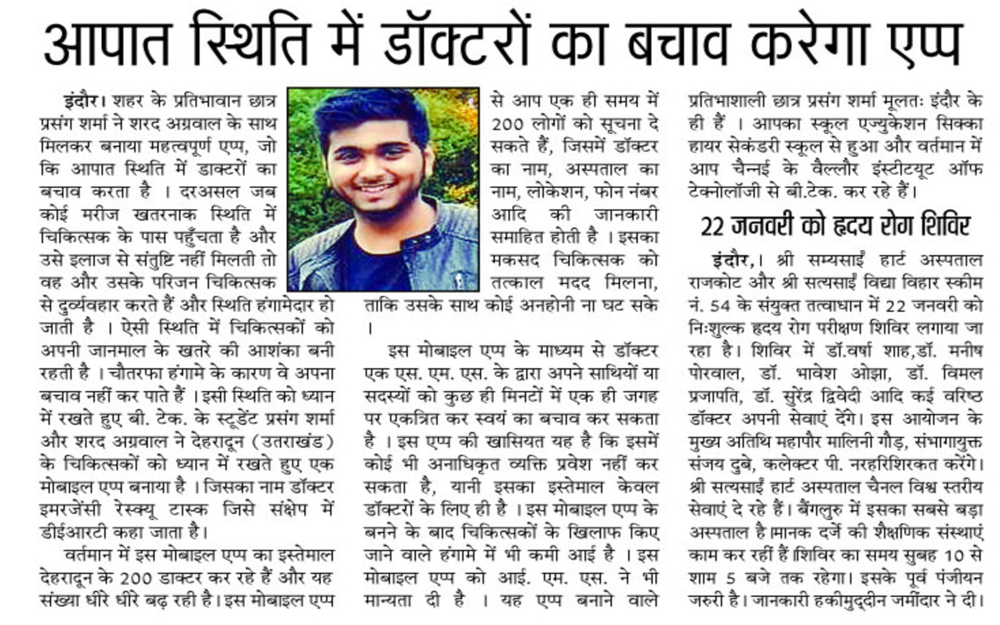2. Newspaper: People’s Samachar (Indore, MP). Date: 24th January 2017
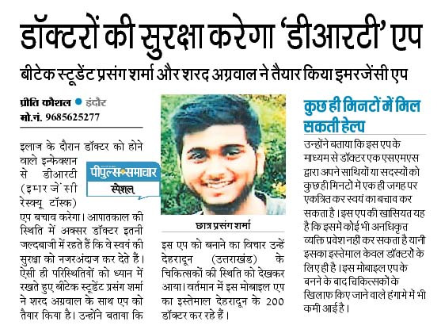Link
Project URL: DERT - Google PlayStore